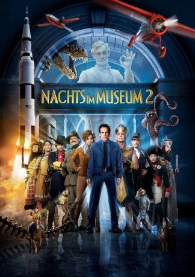

#200 Nachts im Museum 2
Alternativ: Night at the Museum: Battle of the Smithsonian
 
 IMDB-Wertung: 5.9 / 10
IMDB-Wertung: 5.9 / 10  Metascore: 42
Metascore: 42 
Gerade erst hat Nachtwächter Larry in einem einzigartigen heroischen Akt sein Museum vor dem Chaos der Kreaturen bewahrt, da ist er seinen Job schon wieder los: Hologramme ersetzen die Exponate. Die Originale werden zur Archivierung ins Smithsonian National Museum nach Washington D.C. verschickt und im weltgrößten Museumskomplex spielen plötzlich 136 Millionen Ausstellungsstücke verrückt ...
Jahr: 2009
Dauer: 105 Minuten
FSK: 6
Land: USA Studio: 20th Century FoxTonspuren:
Untertitel:
Auflösung: 1080p (1920×1080) Größe: 7680 MB
Genre: Abenteuer, Komödie, Familie, Fantasy
Regisseur: Shawn Levy
Drehbuch: Robert Ben Garant, Thomas Lennon, Robert Ben Garant, Thomas Lennon
Soundtrack: Alan Silvestri
Darsteller:
 Ben Stiller als Larry Daley
Ben Stiller als Larry Daley Amy Adams als Amelia Earhart
Amy Adams als Amelia Earhart Owen Wilson als Jedediah
Owen Wilson als Jedediah Hank Azaria als Kahmunrah / The Thinker / Abe Lincoln
Hank Azaria als Kahmunrah / The Thinker / Abe Lincoln Robin Williams als Teddy Roosevelt
Robin Williams als Teddy Roosevelt Christopher Guest als Ivan the Terrible
Christopher Guest als Ivan the Terrible Alain Chabat als Napoleon Bonaparte
Alain Chabat als Napoleon Bonaparte Steve Coogan als Octavius
Steve Coogan als Octavius Ricky Gervais als Dr. McPhee
Ricky Gervais als Dr. McPhee Bill Hader als George Armstrong Custer
Bill Hader als George Armstrong Custer Jon Bernthal als Al Capone
Jon Bernthal als Al Capone Patrick Gallagher als Attila the Hun
Patrick Gallagher als Attila the Hun Jake Cherry als Nicky
Jake Cherry als Nicky Rami Malek als Ahkmenrah
Rami Malek als Ahkmenrah- Mizuo Peck als Sacajawea
- Kerry van der Griend als Neanderthal #1
- Matthew Harrison als Neanderthal #2
 Darryl Quon als Hun #2
Darryl Quon als Hun #2- Paul Chih-Ping Cheng als Hun #4
 Jay Baruchel als Sailor Joey Motorola
Jay Baruchel als Sailor Joey Motorola Mindy Kaling als Docent
Mindy Kaling als Docent- Keith Powell als Tuskegee Airman #1
 Craig Robinson als Tuskegee Airman #2
Craig Robinson als Tuskegee Airman #2 Samuel Patrick Chu als Teenage Boy #1
Samuel Patrick Chu als Teenage Boy #1 Clint Howard als Air and Space Mission Control Tech #1
Clint Howard als Air and Space Mission Control Tech #1 Matty Finochio als Air and Space Mission Control Tech #2
Matty Finochio als Air and Space Mission Control Tech #2- George Foreman als Himself
- Josh Byer als Capone Gangster #1
- Alberta Mayne als Kissing Nurse
- Clifton MaCabe Murray als Kissing Sailor
- Caroll Spinney als Oscar the Grouch
 Dan Joffre als Town Car Driver
Dan Joffre als Town Car Driver Regina Taufen als New York Reporter
Regina Taufen als New York Reporter Shawn Levy als Infomercial Father
Shawn Levy als Infomercial Father- Kevin Jonas als Cherub
- Joe Jonas als Cherub
- Nick Jonas als Cherub
 Eugene Levy als Albert Einstein
Eugene Levy als Albert Einstein Brad Garrett als Easter Island Head
Brad Garrett als Easter Island Head Don Abernathy als Airport Traveler , uncredited
Don Abernathy als Airport Traveler , uncredited- Megan Alda als Cowgirl , uncredited
- Robert Ben Garant als Orville Wright , uncredited
 Ed Helms als Larry Daley's Assistant , uncredited
Ed Helms als Larry Daley's Assistant , uncredited Jonah Hill als Brandon / Brundon the Security Guard , uncredited
Jonah Hill als Brandon / Brundon the Security Guard , uncredited- Frankie Jonas als Extra - Child in Museum , uncredited
 Waléra Kanischtscheff als Ivan the Terrible , uncredited
Waléra Kanischtscheff als Ivan the Terrible , uncredited Thomas Lennon als Wilbur Wright , uncredited
Thomas Lennon als Wilbur Wright , uncredited Crystal the Monkey als Dexter / Able , uncredited
Crystal the Monkey als Dexter / Able , uncredited- Reiner Prochaska als Steltsy , uncredited
- Robert Underwood als Air and Space Mission Control Tech , uncredited
Datei: X:\3-Trilogie(N-Z)\Nachts im Museum\Nachts im Museum 2 (2009, FSK6, 1920x1080).mkv seit 14.02.2015
Festplatte: HD Collection-3(N-Z)-6(A-Z)
 Alle Filme aus Gruppe '3-Trilogie(N-Z)\Nachts im Museum'
Alle Filme aus Gruppe '3-Trilogie(N-Z)\Nachts im Museum'